import numpy as np
import pandas as pd
import matplotlib.pyplot as plt
import seaborn as sns
import matplotlib.colors
diamonds = sns.load_dataset(
"diamonds", cache=True, data_home=None
).sample(5000)
# You can uncomment this line to change the style of the graphs.
# plt.style.use('ggplot')Data-vis
Introducción a matplotlib
Matplotlib
Matplotlib is a versatile and robust tool for creating high-quality, customizable graphics. While it is a Python library, it can also be used in other environments like Jupyter Notebook. It is compatible with common data analysis packages such as Pandas and NumPy, and it serves as the foundation for more advanced packages used for visualization and analysis, such as Seaborn, HoloViews, Basemap, GeoPandas, and Canopy.
When using Matplotlib locally, it is recommended to install it through a Python package manager, like the well-known “pip.” You can do this by running the command “pip install matplotlib” in your terminal or command prompt, as shown in the image. If you are working in a cloud-based environment, you will also need to install the necessary packages as demonstrated.
First steps
Matplotlib is a library used for creating visualizations and graphs in Python. After installing the library, you need to import it into your working environment. It’s important to understand that Matplotlib works with two main components or “interaction zones”:
Figure: This is the top-level container that encompasses all elements, essentially acting as the “window” that holds the graph. You can find more details in the matplotlib.figure module.
Axes: Axes contain the elements of the figure and allow you to control aspects like plotting, axes, appearance, and more. Detailed information about axes can be found in the matplotlib.axes module.
Matplotlib provides three ways to use the library:
Using the pylab module: By importing the library with the command from pylab import *, you get a style similar to MATLAB. This approach is suitable for quick testing and command-line interactions, although it’s less recommended in general usage.
Using the pyplot module: This is a state-based interface for Matplotlib, also similar to MATLAB. It automates the creation of the necessary instances for drawing the graph and is recommended for both interactive and static plotting. You can find more information and a list of functions in the matplotlib.pyplot module.

Using an object-oriented interface: This is the most complex method but offers more control. It allows the generation of advanced graphics because you have greater control over the code to create instances and apply methods to them. This approach is widely recommended for non-interactive graphic generation and can be easily integrated into functions and scripts within larger projects.

Further reading
Visit the The Python Graph Gallery for inspiration.
Visit the matplotlib documentation, there are learning sources for begginers and advanced users.
Read the complete guide of Kaggle. It can be helpful.
Download the Datacamp matplotlib cheat sheet

Basics
Plot
x = diamonds["carat"]
y = diamonds["price"]/1000
z = diamonds["cut"]plt.plot(x, y, color = 'b', marker = ".", linestyle = "none")
plt.show()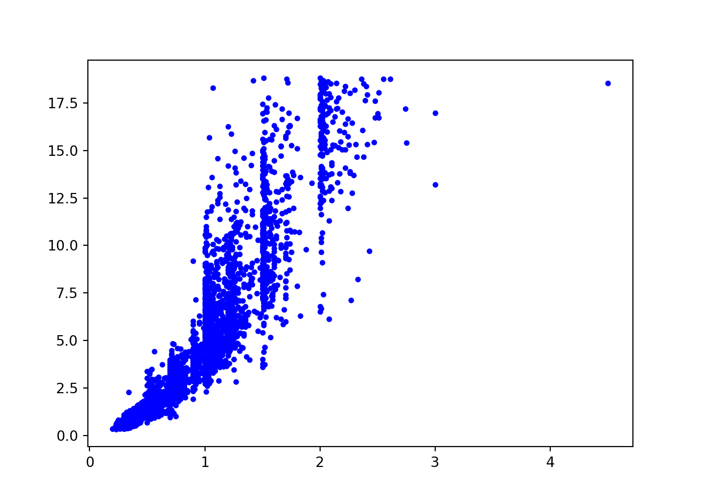
plt.close()plt.plot(x, y, 'b.')
plt.show()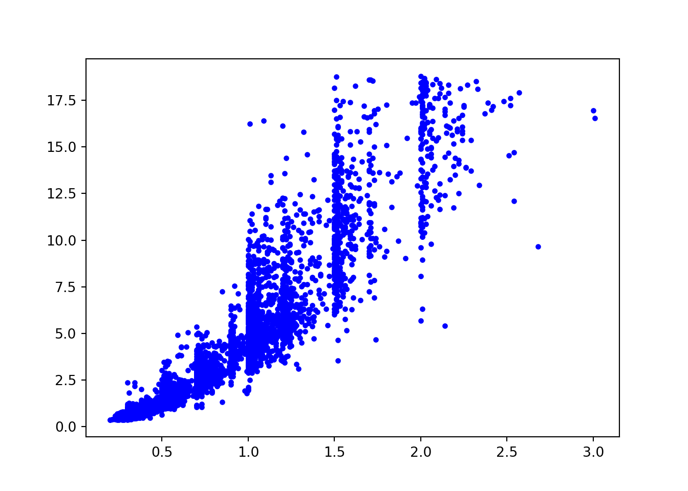
plt.close()plt.plot(x, y, 'rx')
plt.show()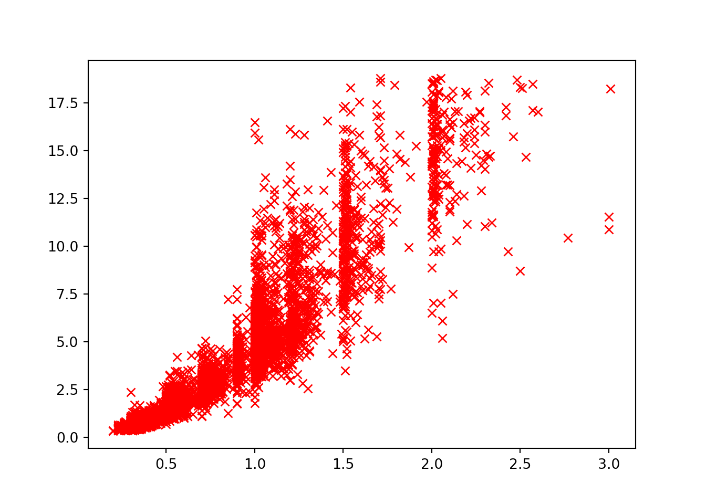
plt.close()plt.plot(x, y, 'go')
plt.plot(y, x, 'go')
plt.show()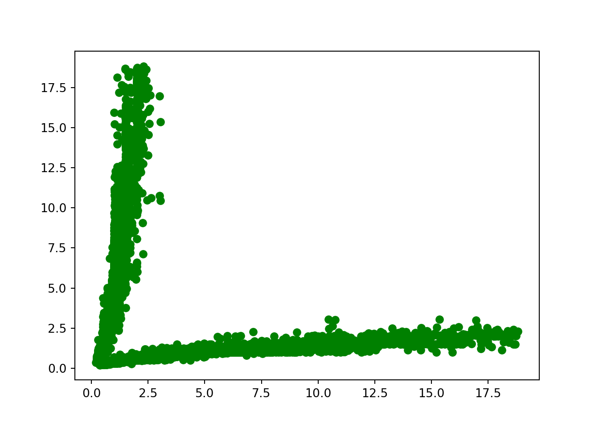
plt.close()Histogram
plt.hist(x)
plt.show()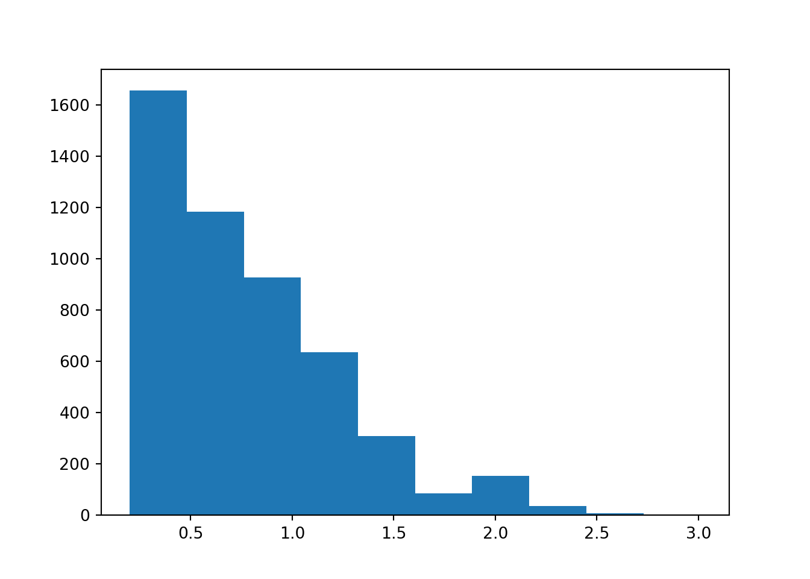
plt.close()Scatterplot
plt.scatter(x, y)
plt.show()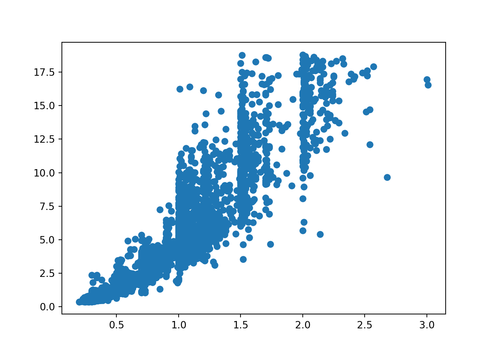
plt.close()Pie
z_count = z.value_counts()
plot_01 = plt.pie(z_count, labels=z_count.index)
plt.show()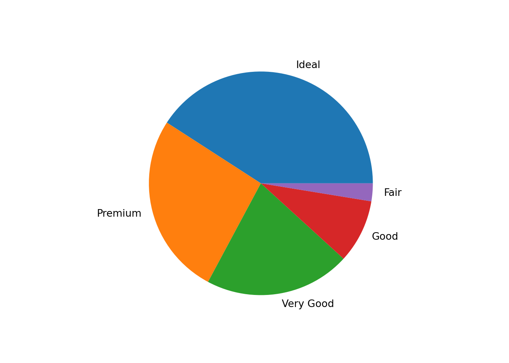
plt.close()plot_01 = plt.pie(z_count)
plt.plot(x, y, 'b.')
plt.show()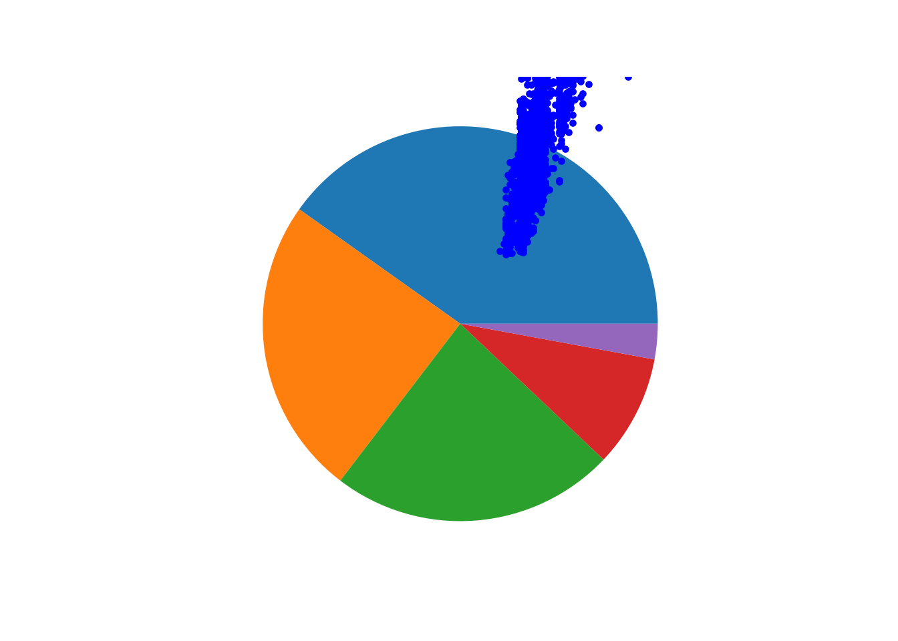
plt.close()Barplot
plt.bar(z_count.index, z_count)
plt.show()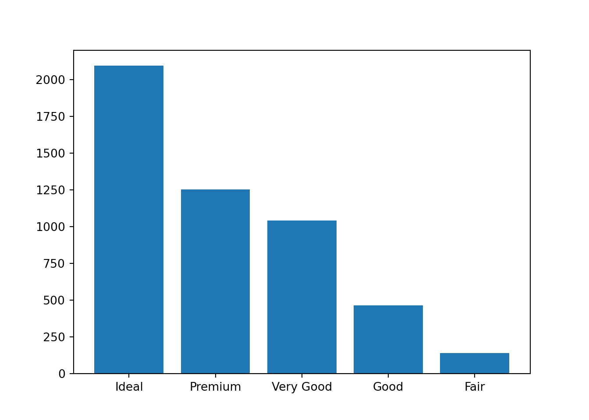
plt.close()Boxplot
plot_01 = plt.boxplot(x)
plt.show()
plt.close()Subplot
# subplot
# # de filas
# # de columnas
# índice
plt.subplot(1, 2, 1)
plt.plot(x, y, 'r.')
plt.subplot(1, 2, 2)
plt.hist(y)
plt.show()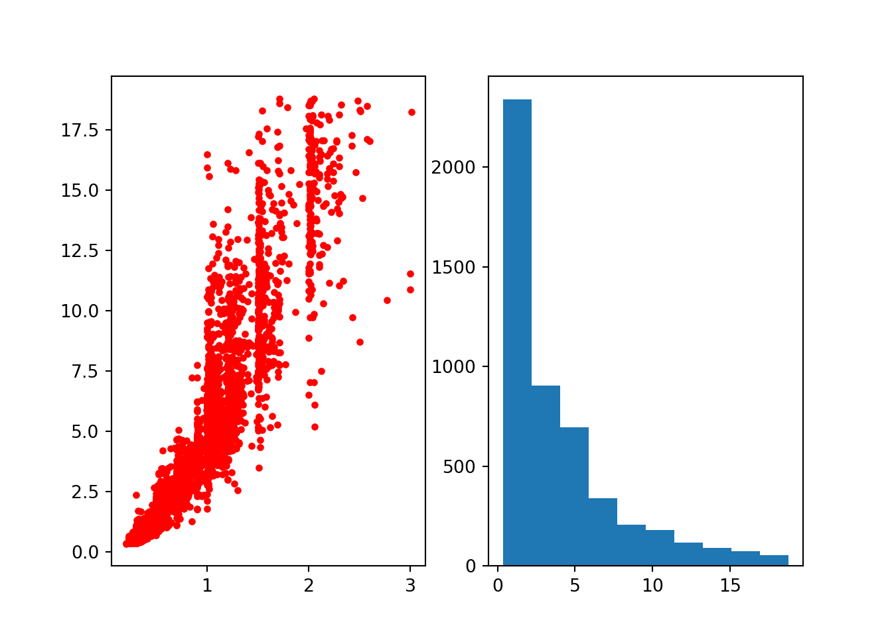
plt.close()Object oriented use
fig = plt.figure()
axes = fig.add_axes([0.1, 0.1, 0.8, 0.8])
axes.plot(x, y, "b.")
plt.show()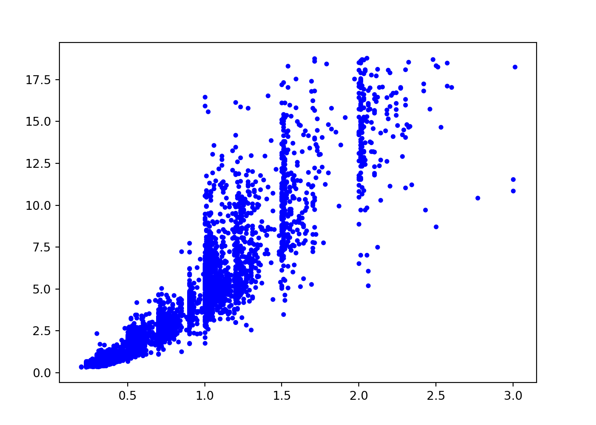
plt.close()fig = plt.figure()
axes = fig.add_axes([0.1, 0.1, 0.4, 0.5])
axes.plot(x, y, "gv")
plt.show()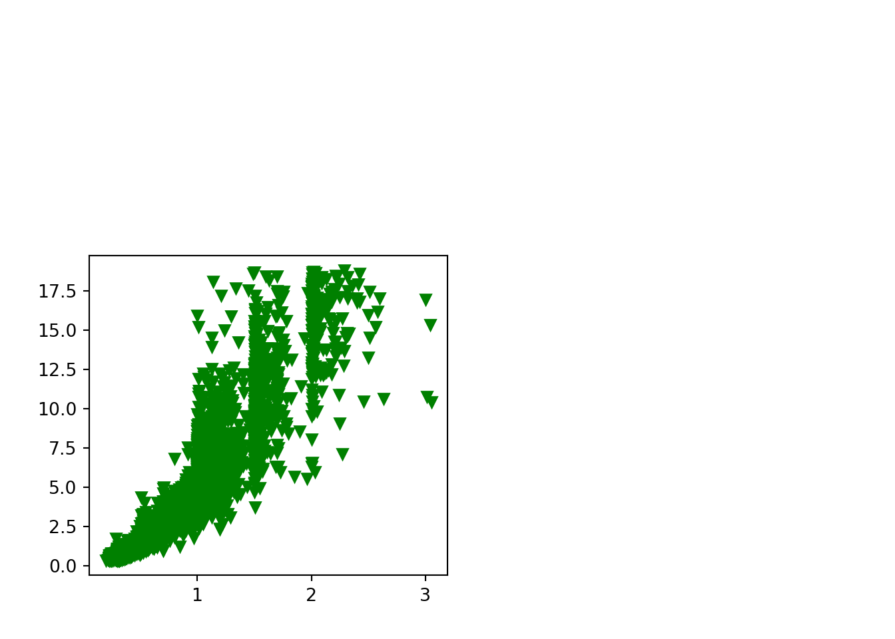
plt.close()fig = plt.figure()
axes1 = fig.add_axes([0.1, 0.1, .65, 0.65])
axes1.scatter(x, y)
axes2 = fig.add_axes([0.8, 0.1, 0.15, 0.65])
axes2.boxplot(x){'whiskers': [<matplotlib.lines.Line2D object at 0x7f0d84f41d10>, <matplotlib.lines.Line2D object at 0x7f0d84f42e10>], 'caps': [<matplotlib.lines.Line2D object at 0x7f0d84f43d10>, <matplotlib.lines.Line2D object at 0x7f0d84dbfdd0>], 'boxes': [<matplotlib.lines.Line2D object at 0x7f0d84f43550>], 'medians': [<matplotlib.lines.Line2D object at 0x7f0d84dbc2d0>], 'fliers': [<matplotlib.lines.Line2D object at 0x7f0d84dbd150>], 'means': []}axes3 = fig.add_axes([0.1, 0.8, 0.65, 0.15])
axes3.boxplot(y, vert=False){'whiskers': [<matplotlib.lines.Line2D object at 0x7f0d84f1c350>, <matplotlib.lines.Line2D object at 0x7f0d84d7f790>], 'caps': [<matplotlib.lines.Line2D object at 0x7f0d84d7c650>, <matplotlib.lines.Line2D object at 0x7f0d84d7ec90>], 'boxes': [<matplotlib.lines.Line2D object at 0x7f0d84f12550>], 'medians': [<matplotlib.lines.Line2D object at 0x7f0d84d7ce50>], 'fliers': [<matplotlib.lines.Line2D object at 0x7f0d84f4d750>], 'means': []}plt.show()
plt.close()cut_groups = diamonds.groupby("cut")<string>:2: FutureWarning: The default of observed=False is deprecated and will be changed to True in a future version of pandas. Pass observed=False to retain current behavior or observed=True to adopt the future default and silence this warning.fig = plt.figure()
axes = fig.add_axes([0.1, 0.1, .8, 0.8])
for group_name, group_df in cut_groups:
axes.scatter(group_df["carat"], group_df["price"], label = group_name, linestyle = "", marker = ".")
plt.legend()
plt.show()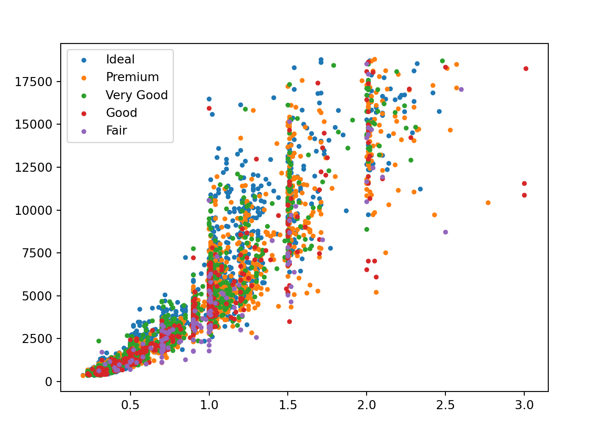
plt.close()Subplots is not subplot
# fig = plt.figure()
# axes = fig.add_axes([0.1, 0.1, 0.8, 0.8])
fig, axes = plt.subplots(nrows = 1, ncols=2)
axes[0].plot(x, y, 'b.')
axes[1].plot(x, y, 'ro')
plt.show()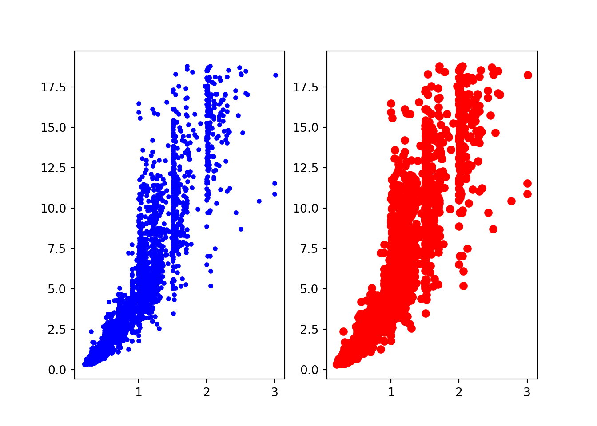
plt.close()colors = {'Fair':'blue', 'Good':'orange', 'Very Good':'green', 'Premium':'red', 'Ideal':'purple'}
fig, ax = plt.subplots()
grouped = diamonds.groupby('cut')<string>:1: FutureWarning: The default of observed=False is deprecated and will be changed to True in a future version of pandas. Pass observed=False to retain current behavior or observed=True to adopt the future default and silence this warning.for key, group in grouped:
group.plot(ax=ax, kind='scatter', x='carat', y='price', label=key, color=colors[key])
plt.legend()
plt.show()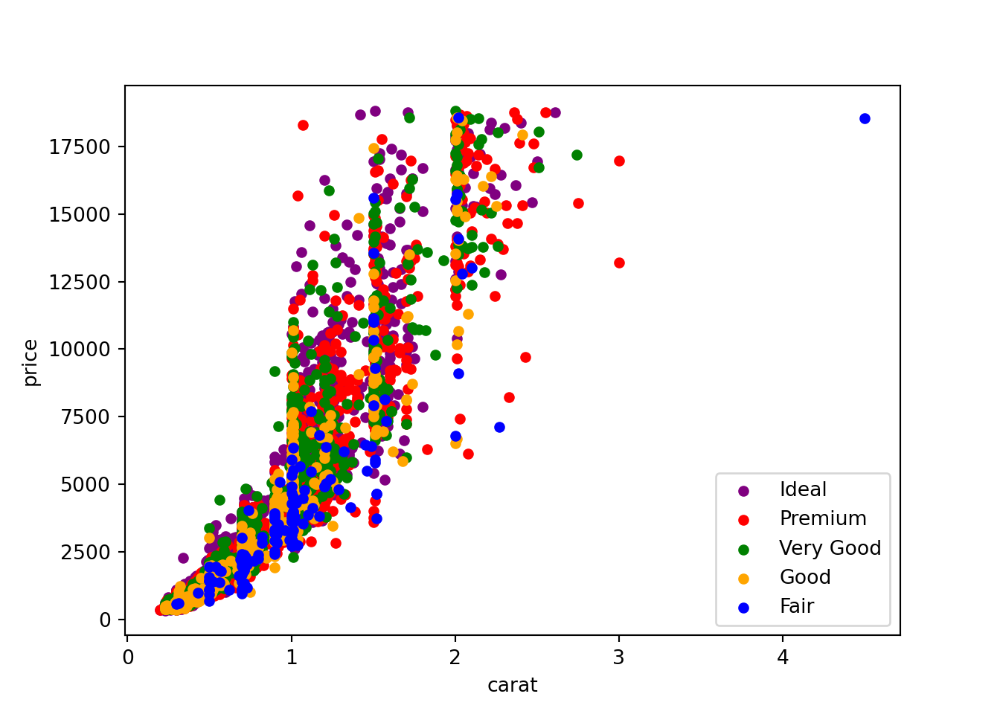
plt.close()fig, [ax1, ax2] = plt.subplots(nrows = 1, ncols=2, sharey = True)
ax1.plot(x, y, 'b.')
ax2.plot(x, y, 'ro')
plt.show()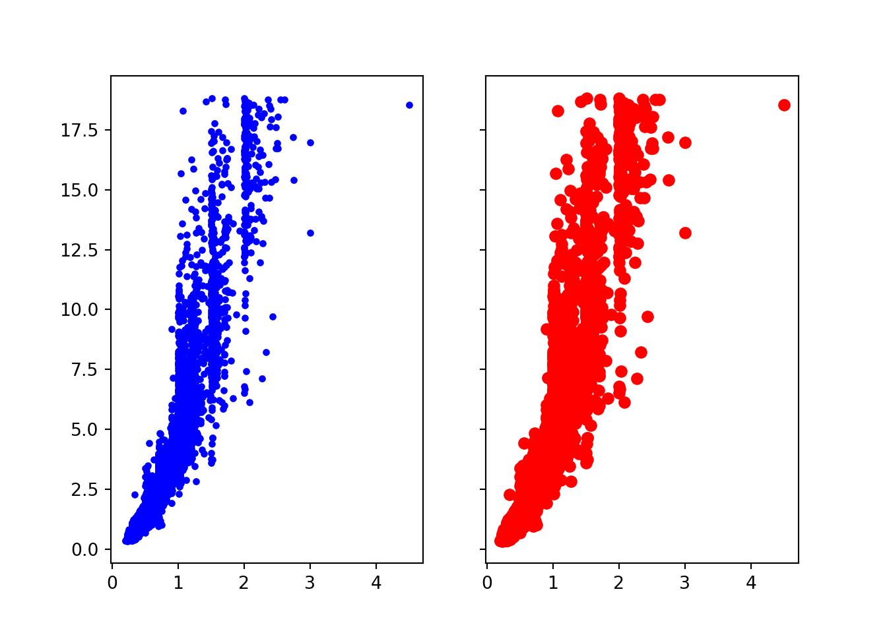
plt.close()x0 = np.linspace(0, 5, 11)
y1, y2, y3, y4, y5, y6 = np.sin(x0), np.cos(x0), np.tan(x0), x0, x0**2, x0**3
fig, [[ax1, ax2, ax3], [ax4, ax5, ax6]] = plt.subplots(nrows = 2, ncols=3)
ax1.plot(x0, y1)
ax2.plot(x0, y2, 'ro')
ax3.plot(x0, y3, 'gD')
ax4.plot(x0, y4)
ax5.plot(x0, y5, 'ro')
ax6.plot(x0, y6, 'gD')
fig.tight_layout()
plt.show()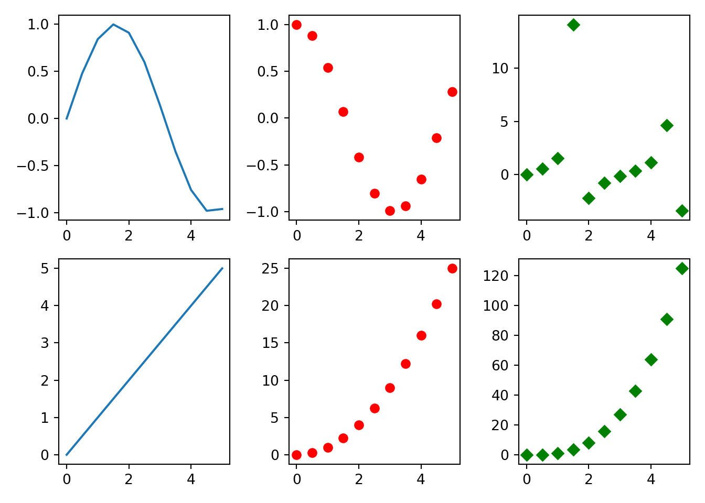
plt.close()Figure information
fig = plt.figure()
axes1 = fig.add_axes([0.1, 0.1, .65, 0.65])
axes1.scatter(x, y)
axes2 = fig.add_axes([0.8, 0.1, 0.15, 0.65])
axes2.boxplot(x){'whiskers': [<matplotlib.lines.Line2D object at 0x7f0d8484abd0>, <matplotlib.lines.Line2D object at 0x7f0d8484b850>], 'caps': [<matplotlib.lines.Line2D object at 0x7f0d8465c450>, <matplotlib.lines.Line2D object at 0x7f0d8465cf50>], 'boxes': [<matplotlib.lines.Line2D object at 0x7f0d8484a150>], 'medians': [<matplotlib.lines.Line2D object at 0x7f0d8465d990>], 'fliers': [<matplotlib.lines.Line2D object at 0x7f0d8465e490>], 'means': []}axes3 = fig.add_axes([0.1, 0.8, 0.65, 0.15])
axes3.boxplot(y, vert=False){'whiskers': [<matplotlib.lines.Line2D object at 0x7f0d84698b10>, <matplotlib.lines.Line2D object at 0x7f0d84699790>], 'caps': [<matplotlib.lines.Line2D object at 0x7f0d8469a310>, <matplotlib.lines.Line2D object at 0x7f0d8469ad90>], 'boxes': [<matplotlib.lines.Line2D object at 0x7f0d8468ff90>], 'medians': [<matplotlib.lines.Line2D object at 0x7f0d8469b910>], 'fliers': [<matplotlib.lines.Line2D object at 0x7f0d846ac2d0>], 'means': []}axes1.set_xlabel("Carat")
axes1.set_ylabel("Price")
axes2.set_xticks([])[]axes2.set_yticks([])[]axes3.set_xticks([])[]axes3.set_yticks([])[]plt.show()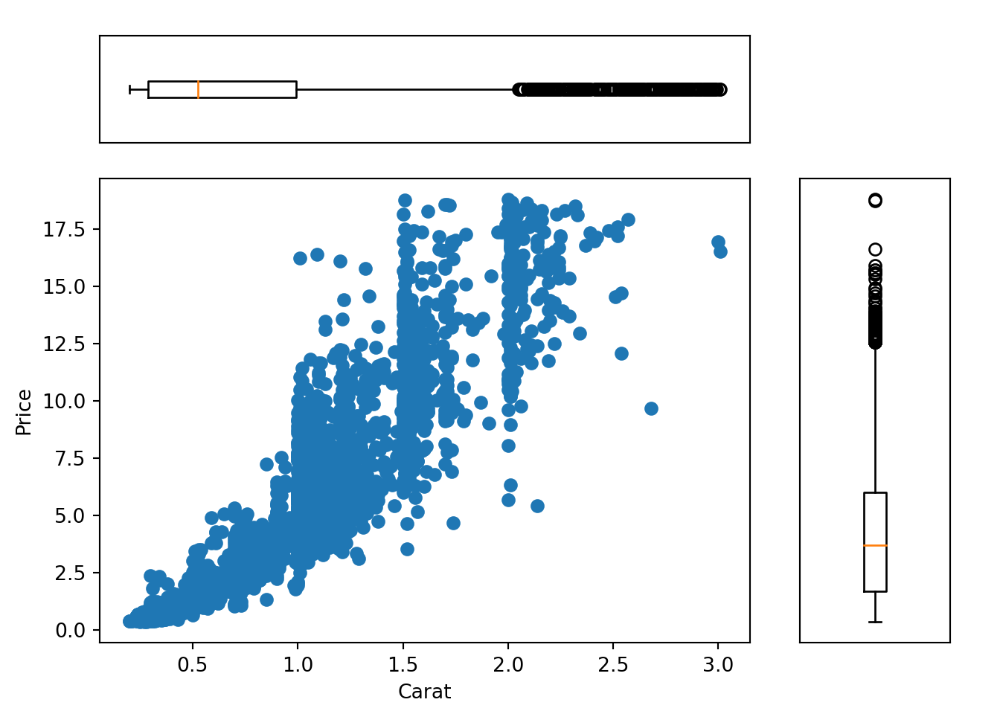
plt.close()fig, [ax1, ax2] = plt.subplots(nrows = 2, ncols=1)
ax1.plot(x0, y1, 'g', label="sen(x)")
ax1.set_title("Seno")
ax1.set_xlabel("x")
ax1.axhline()
ax1.legend()
ax2.plot(x0, y2, 'r', label="$cos(x)$")
ax2.axhline()
ax2.set_title("Coseno")
ax2.set_xlabel("x")
ax2.legend()
fig.tight_layout()
fig.set_figwidth(20)
plt.show()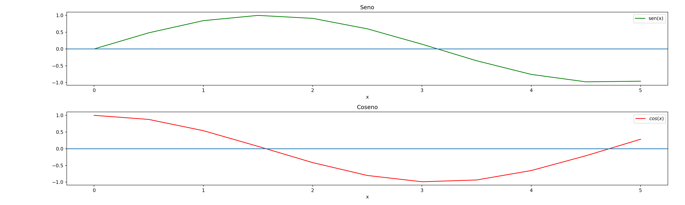
plt.close()plt.subplot(2, 1, 1)
plt.plot(x0, y1, 'g', label="sen(x)")
plt.title("Seno")
plt.xlabel("x")
plt.axhline()
plt.legend()
# plt.legend(bbox_to_anchor = (1.3, 0.5))
plt.subplot(2, 1, 2)
plt.plot(x0, y2, 'r', label="$cos(x)$")
plt.axhline()
plt.title("Coseno")
plt.xlabel("x")
plt.legend()
plt.tight_layout()
plt.show()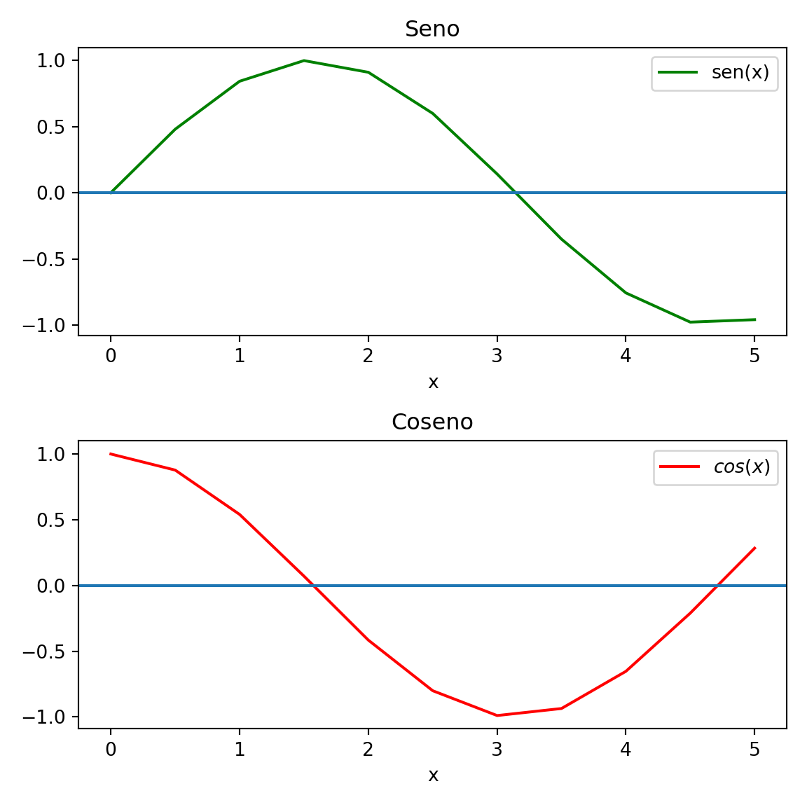
plt.close()Decoration
print(plt.style.available)['Solarize_Light2', '_classic_test_patch', '_mpl-gallery', '_mpl-gallery-nogrid', 'bmh', 'classic', 'dark_background', 'fast', 'fivethirtyeight', 'ggplot', 'grayscale', 'seaborn-v0_8', 'seaborn-v0_8-bright', 'seaborn-v0_8-colorblind', 'seaborn-v0_8-dark', 'seaborn-v0_8-dark-palette', 'seaborn-v0_8-darkgrid', 'seaborn-v0_8-deep', 'seaborn-v0_8-muted', 'seaborn-v0_8-notebook', 'seaborn-v0_8-paper', 'seaborn-v0_8-pastel', 'seaborn-v0_8-poster', 'seaborn-v0_8-talk', 'seaborn-v0_8-ticks', 'seaborn-v0_8-white', 'seaborn-v0_8-whitegrid', 'tableau-colorblind10']plt.style.use("ggplot")
fig, [ax1, ax2] = plt.subplots(nrows = 2, ncols=1)
# ax1.plot(x, y1, color="#ff00ff", alpha = 0.1, linewidth = 10)
ax1.scatter(x0, y1, label="sen(x)", color="#ff00ff", alpha = 1, linewidth = 1, marker = "p")
ax1.set_title("Seno")
ax1.set_xlabel("x")
ax1.axhline(color= "#9999aa")
ax1.legend()
ax2.plot(x0, y2, label="$cos(x)$", color="#ff0000")
ax2.axhline(color= "#9999aa")
ax2.set_title("Coseno")
ax2.set_xlabel("x")
ax2.legend()
fig.tight_layout()
fig.set_figwidth(20)
plt.show()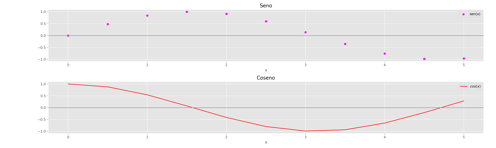
plt.close()Exercise
Generate the following charts.
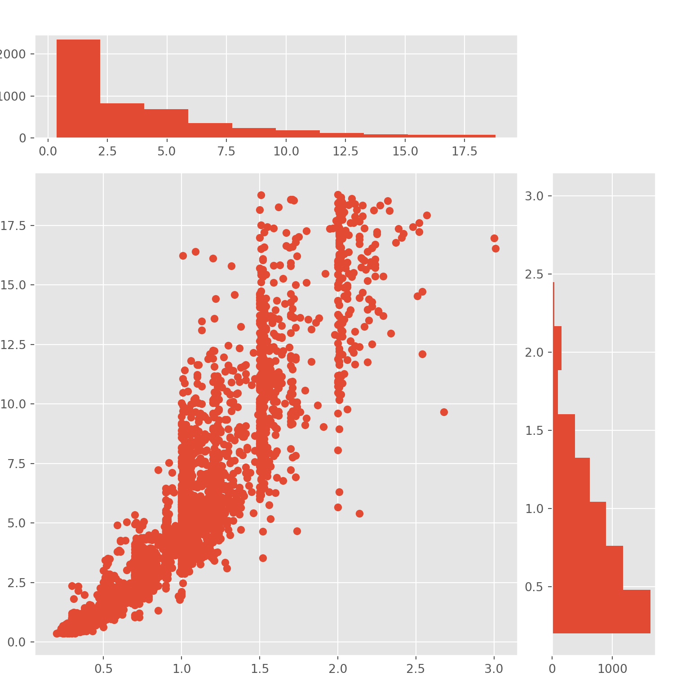